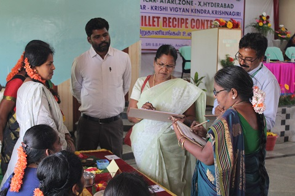
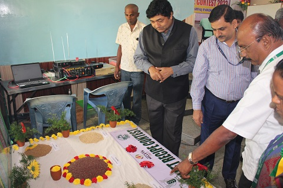
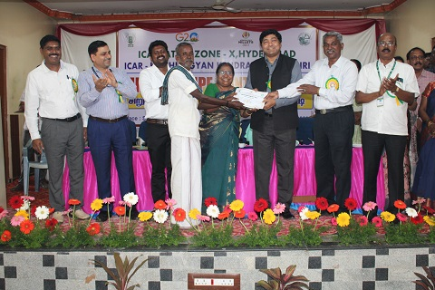
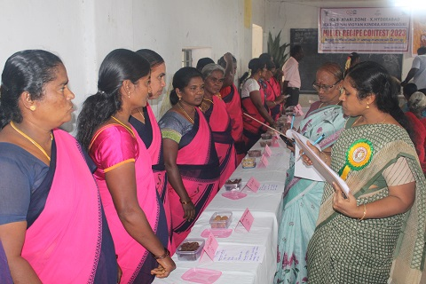
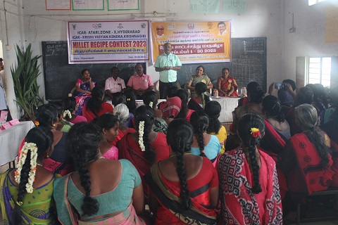
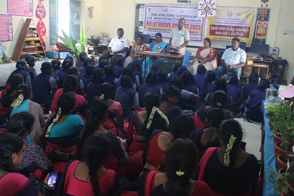

Judging of millet recipes by Dr. Ranjith
Block Medical Officer, Anchetty
Lighting of the lamp by Dr. Ranjay Kumar Singh
ADG (Agrl. Extn), ICAR, New Delhi

Showcasing of diff. millets to Dr. Ranjay Kumar Singh
ADG (Agrl. Extn), ICAR, New Delhi
Interaction with elderly women by Dr.Shaik.N.Meera
Director, ICAR-ATARI Zone-X, Hyberabad
Tasting of millet dishes by Dr. Ranjay Kumar Singh
ADG (Agrl. Extn.), ICAR, New Delhi
 Interaction with contestant by Dr. P. P. Murugan
Interaction with contestant by Dr. P. P. Murugan
Director of Education Education, TNAU, Coimbatore
Observing the variety of millet dishes by Dr. B. Malathi
Senior Scientist, ICAR-ATARI Zone-X, Hyderabad
Interaction with contestant by Dr. Ranjay Kumar Singh
ADG (Agrl. Extn.), ICAR, New Delhi
Discussion with contestant on millet and
herbal blended recipes
Welcome address by Dr. T. Sundarraj
Senior Scientist & Head, KVK Krishnagiri
Special address by Dr. P. P. Murugan
Director of Extension Education, TNAU Coimbatore
Special address by Dr. Kadirvel Govindasamy
Director, ICAR-ATARI Zone-VI, Guwahati
Presidential address by Dr. Shaik.N.Meera
Director, ICAR-ATARI Zone-X, Hyderabad
Chief guest address by Dr. Ranjay Kumar Singh
ADG (Agrl. Extn.), ICAR-New Delhi
Certificate distribution by Dr. Ranjay Kumar Singh
ADG (Agrl. Extn.), ICAR-New Delhi

Certificate distribution by Dr. Shaik.N.Meera
Director, ICAR-ATARI Zone-X, Hyderabad
Group photographs of millet recipe contest
winners
Dignitaries at the millet recipe programme
Mass oath on Millet nutrition

Judging of millet recipes by Mrs. R. Shubashini
CDPO, ICDS, Krishnagiri
Judging of millet recipes by School teacher
of Govt. Hr Sec School, Bargur
Welcome address by Mr. S. Senthilkumar
SMS (Agrl. Extn.), KVK Krishnagiri
Special address by Mrs. R. Shubashini
CDPO, ICDS, Krishnagiri
Felicitation address by Mr. R. Murugan
Head Master of Govt. Shool, Bargur Block
Lecture on millet value addition by Mrs. S. Poomathi
SMS (Home Science), KVK Krishnagiri
Technical talk on millet cultivation by Mr. K. Gunasekar
SMS (Soil Science), KVK Krishnagiri

Presidential address by Dr. T. Sundarraj
Senior Scientist & Head, KVK Krishnagiri
Certificate & seedling distribution to
millet recipe contest winners
Inaugural address by Mr. S. Senthilkumar
SMS (Agrl. Extn.), KVK Krishnagiri
 Technical talk on Millet by Mrs. S. Poomathi
Technical talk on Millet by Mrs. S. Poomathi
SMS (Home Science), KVK Krishnagiri
Felicitation address by Mrs. P. Joy
CDPO of Shoolagiri, Krishnagiri
Presidential address by Mrs. T. S. Arulmozhi
Head Master (i/c) of Govt. Hr Sec School Shoolagiri

Special address by Dr. T. Sundarraj
Senior Scientist & Head, KVK Krishnagiri
Certificate & seedling distribution to
millet recipe contest winners